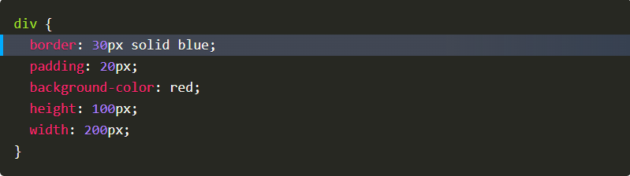

Other Blogs
- HTML-CSS Blog
- Learning Plan
- Identity-Values
- JavaScript-Blog
- Emotional intelligence-Blog
- Neuroplasticity-Blog
- Problem-Solving
- Foundations Reflections
What is the difference between Margin, Border, and Padding?

- The content of a box is everything inside the box. This can be text, video or images. Below we have a simple div and everything with the red background color is the content of the box
- Padding allows you to add extra space to the content element. It also maintains the background color of the element.
- Border is the layer between the margin and padding of an element. Only counted when given an actual width otherwise, it’s zero.
- Margin is how much space is around an element. Margin also does not contribute to the actual size of an element since it is outside the border.
Content
Padding
Border
